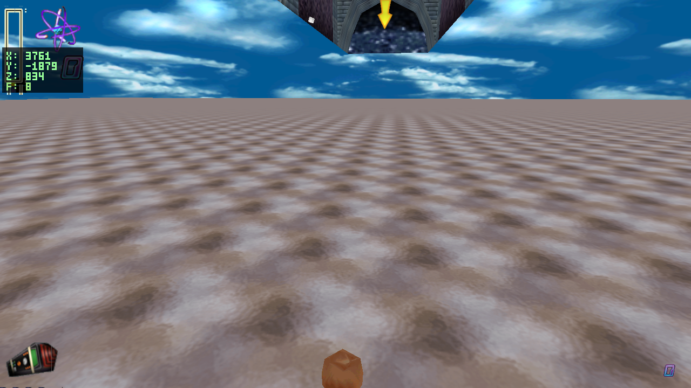
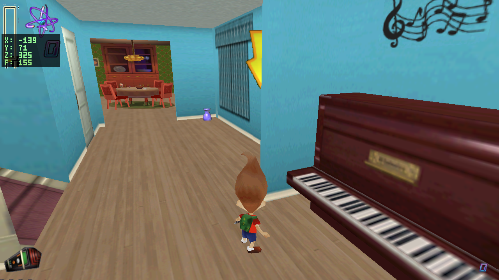
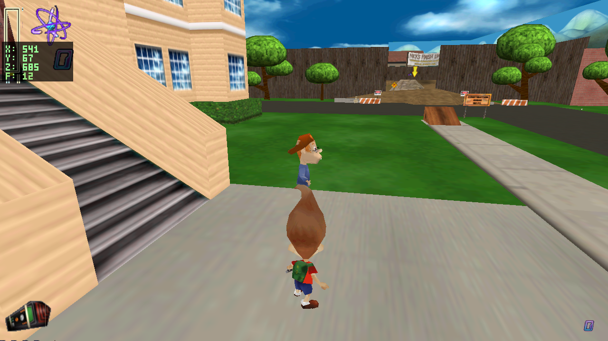

QA Ticket Resolution - Lu9 12 / 14 ADDRESSED 2 INCOMPLETE
Ticket submitted 2026-06-12 before the final sandmanfan 2026-06-12 resolution landed. This page intentionally avoids re-litigating duplicate line items and records only the new deltas plus resolver evidence for the overlap.
Summary
Two new resolver changes came from this ticket: per-instance 3DUD door meshes/textures and hidden scripted 3ROC markers. One placement issue, NPC foot sinking, got a draw-time foot-anchor rule for the stop-pose NPC meshes. The 3DUD bars row also needed a behavior follow-up: the mesh/texture were correct, but the door still used the old hard-coded 180-unit rise instead of the authored 500-unit OpenAmount, moved too slowly, and lacked its opening sound. Most other rows overlap with the sandmanfan 2026-06-12b fixes or are already covered by the static placement path. The level4a candy-bar Plane01 artifact and the level3d stomach-ride hamburger car both remain incomplete and need dedicated follow-up passes.
| # | level | object | report | resolution |
|---|---|---|---|---|
| 1 | level2 | 3FLA C3DFIRESTRATO | rocket flame near flagpole instead of flag | overlap already resolves to assets/ase/flag.ASE + flag.png |
| 2 | level2 | 3BEN C3DBENNY | Benny and NPCs slightly under floor | new NPC stop-pose meshes foot-anchor to authored floor points |
| 3 | level1 | Box03 | playhouse hidden door missing box geometry | verified static placement draws assets/glb/omt/Box03.glb, textured |
| 4 | level1c | 3ROC C3DROCKETSHIP | rocket model visible when it should be a trigger/cutscene object | new 3ROC is invisible until flight/cutscene behavior owns it |
| 5 | level4a | Plane01 | odd triangle planes inside candy bar | incomplete artifact still visible; requires follow-up mesh/render investigation |
| 6 | level1b | 3DUD bars | wrong door texture / not raised high enough / wrong speed and sound | new 3DUD now draws bars.ASE + chain.png, opens by authored OpenAmount=500, uses 30 Hz authored speed scaling, and plays opening/closing door sounds |
| 7 | level1 | 3DOR DOORGRILL2 | incorrect rotation of sewer bars | overlap existing degree/yaw fix applies; resolver draws DoorGrill2.glb, textured |
| 8 | level1 | 3TRE C3DTREE | extra trunk growing at top | overlap sprite-family rule removes generic tree mesh; authored sprite wins |
| 9 | level3 | 3SCD C3DSCHOOLDOOR | mirrored/upside-down sign text | overlap GLB door twins use authored PNG with vertical-flip correction |
| 10 | level3 | 3OMT rockship | incorrect rocket ship model | overlap authored objects.omt shape resolver maps to rocketship.glb |
| 11 | level3d | 3OCT C3DOCTAPUKE | Octapuke ride untextured | overlap resolves to octostop.ASE + octapuke1.png |
| 12 | level3d | stomach | hamburger car missing from ride | incomplete attempted 3AIO wooper binding was the wrong small/flat asset; follow-up must identify the real car source |
| 13 | level2a | Box01 | pink door to area missing | verified static placement draws assets/glb/omt/level2a/Box01.glb, textured |
| 14 | level2a | 3OMT bench05 | school desks use incorrect model | overlap authored objects.omt shape resolver maps bench rows to bench04.glb |
New Fixes
Per-instance DoorUpDown assets
3DUD had a fallback row for downdoor2a.glb, so the authored ASEFile=bars.ase and PNGFile=chain.png on the level1b row were ignored. The existing per-instance door path already handled 3SWN and 3SCD; 3DUD is the same data shape. Follow-up visual review found the bars still did not clear the entryway because the shared door behavior used a fixed 180-unit rise while this row authors OpenAmount=500; the same behavior also used the wrong speed scale and had no class door sound.
src/game/main.c so 3DUD shares the case-insensitive ASE/PNG resolver. Changed behavior_door.c so sliding doors rise to their authored OpenAmount, use DoorSpeed * 30 30 Hz speed scaling, wait for authored OpenTime, then close. Opening plays soundeffects.omt[59] (Door_opening_loop.wav); closing plays soundeffects.omt[58] (door_closing.wav). Added an audit invariant that 3DUD bars must resolve to bars.ASE.[audit] cat=entity name=3DUD tag=bars kind=mesh path=assets/ase/bars.ASE verts=162 textured=1
[BUTTON] pressed 'C3DBUTTON' [AUDIO] play soundeffects.omt[59] -> assets/parsed/soundeffects/soundeffects_audio/0267_Door_opening_loop.wav on channel 1 [DOOR] opening (tag='bars') [DOOR] open (tag='bars') [AUDIO] play soundeffects.omt[58] -> assets/parsed/soundeffects/soundeffects_audio/0117_door_closing.wav on channel 1 [DOOR] closing (tag='bars') [DOOR] closed (tag='bars')
Scripted rocket markers stay hidden
C3DRocketShip is a scripted flight/cutscene object, not a static rocket prop at every authored marker. Drawing rocket.ASE directly exposed invisible marker objects before the behavior system owns linked visibility and flight state.
3ROC type resolver to explicit invisible and added an audit invariant that visible 3ROC meshes are regressions.[audit] cat=entity name=3ROC tag=C3DROCKETSHIP kind=invisible path=- verts=-1 textured=0
NPC stop poses rest on the floor
The JNBG stop-pose character ASEs have negative local Y bounds. Drawing them at the authored floor coordinate puts their feet below the floor. The player path is separate, so the adjustment is scoped to static NPC/friend stop-pose meshes.
[audit] cat=entity name=3BEN tag=C3DBENNY kind=mesh path=assets/ase/bennystop.ASE verts=1488 textured=1
Stomach ride hamburger car INCOMPLETE
The first pass guessed that 3AIO/wooper should bind to assets/ase/omt/hamburger.ASE. Visual review rejected that: the ride car still does not appear, and the visible replacement is only a small unrelated flat/textured artifact. That binding and its audit assertion were removed rather than preserving a bad visual as a fix.
Evidence Captures





Audit Gate
make python3 tools/audit_faithfulness.py 0 findings (0 waived, 0 NEW) -> build/audit_faithfulness.json
This ticket was submitted before the sandmanfan 2026-06-12b work was complete. Items marked overlap are intentionally closed by that already-landed resolver work rather than duplicated here.